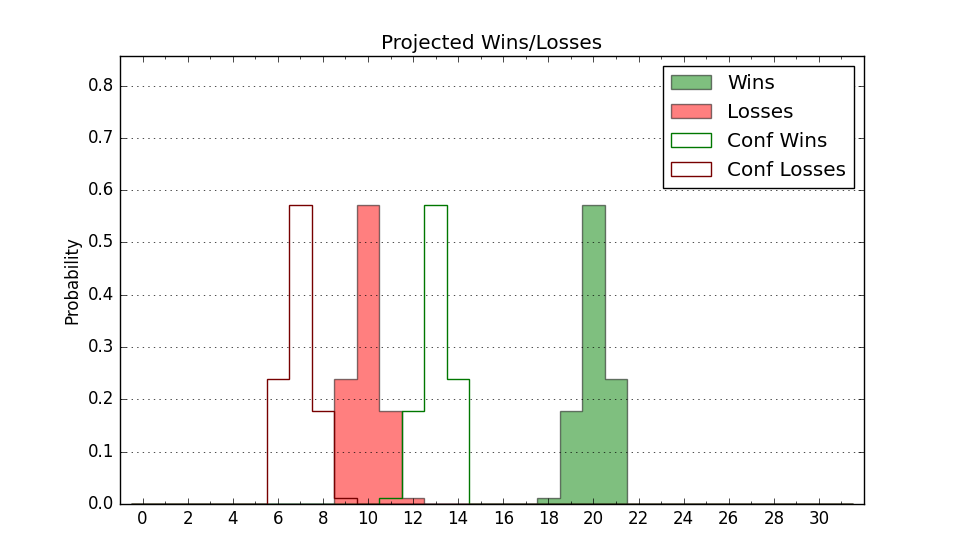

| Home | Game Probabilities | Conferences | Preseason Predictions | Odds Charts | NCAA Tournament |
| City: | Peoria, Illinois | |
| Conference: | Missouri Valley (3rd)
| |
| Record: | 11-6 (Conf) 18-9 (Overall) | |
| Ratings: | Comp.: 14.6 (59th) Net: 14.6 (60th) Off: 113.9 (51st) Def: 99.3 (77th) SoR: 7.6 (92nd) |
| Remaining | ||||||
|---|---|---|---|---|---|---|
| Date | Opponent | Win Prob | Pred. | |||
| 2/24 | Illinois St. (179) | 90.3% | W 74-59 | |||
| 2/28 | Southern Illinois (112) | 80.0% | W 73-64 | |||
| 3/3 | @ Drake (49) | 32.0% | L 70-75 | |||
| Previous | Game Score | |||||
| Date | Opponent | Win Prob | Result | Off | Def | Net |
| 11/6 | @UAB (123) | 58.7% | W 73-71 | -12.4 | 18.4 | 6.0 |
| 11/11 | Utah St. (44) | 59.3% | W 72-66 | -17.5 | 19.3 | 1.8 |
| 11/14 | Tarleton St. (148) | 86.8% | W 86-63 | 8.0 | 3.5 | 11.5 |
| 11/20 | (N) Tulane (116) | 69.6% | W 80-77 | -7.2 | -7.6 | -14.7 |
| 11/22 | (N) UTEP (209) | 86.2% | W 63-59 | -20.6 | 8.2 | -12.4 |
| 11/25 | Vermont (103) | 78.7% | W 79-70 | 7.6 | -1.7 | 5.9 |
| 11/29 | @Murray St. (137) | 62.4% | L 72-79 | 1.3 | -17.3 | -16.1 |
| 12/2 | Indiana St. (33) | 54.5% | L 77-85 | -5.8 | -6.5 | -12.3 |
| 12/5 | @Akron (97) | 49.6% | L 52-67 | -21.4 | 4.2 | -17.1 |
| 12/15 | Cleveland St. (213) | 92.3% | L 69-76 | -19.4 | -19.0 | -38.4 |
| 12/18 | (N) Duquesne (113) | 68.6% | L 67-69 | -0.4 | -6.5 | -6.8 |
| 12/21 | SIU Edwardsville (282) | 95.7% | W 75-64 | -9.7 | -1.1 | -10.8 |
| 1/3 | @Valparaiso (291) | 87.8% | W 86-61 | 4.6 | 10.1 | 14.7 |
| 1/6 | Missouri St. (142) | 85.8% | W 86-60 | 5.7 | 10.7 | 16.4 |
| 1/10 | Evansville (189) | 91.0% | W 86-50 | 10.6 | 20.9 | 31.6 |
| 1/13 | @Illinois Chicago (170) | 71.4% | W 77-59 | 17.5 | 1.1 | 18.7 |
| 1/17 | @Southern Illinois (112) | 54.0% | W 70-69 | 7.2 | -2.9 | 4.2 |
| 1/20 | Belmont (130) | 84.2% | W 95-72 | 27.6 | -8.2 | 19.4 |
| 1/24 | Murray St. (137) | 85.0% | W 71-63 | -1.6 | 1.7 | 0.1 |
| 1/27 | @Indiana St. (33) | 26.0% | L 86-95 | 15.8 | -17.3 | -1.5 |
| 1/31 | Northern Iowa (119) | 81.5% | W 85-69 | 9.9 | -0.4 | 9.5 |
| 2/3 | @Illinois St. (179) | 73.3% | W 73-60 | 12.7 | 1.2 | 13.9 |
| 2/7 | @Evansville (189) | 74.9% | L 70-73 | -11.0 | -4.8 | -15.8 |
| 2/10 | Drake (49) | 61.6% | L 67-74 | -11.2 | 0.9 | -10.3 |
| 2/14 | Illinois Chicago (170) | 89.5% | W 85-73 | 1.8 | -11.2 | -9.4 |
| 2/18 | @Northern Iowa (119) | 56.4% | L 63-74 | -15.4 | -5.2 | -20.6 |
| 2/21 | @Missouri St. (142) | 64.0% | W 86-62 | 26.4 | 7.3 | 33.7 |
| Stats & Trends | |||||
|---|---|---|---|---|---|
| Current | Day | Week | Month | Season | |
| Composite | 14.6 | -0.0 | +0.4 | +0.7 | +10.1 |
| Comp Rank | 59 | -- | -- | +5 | +43 |
| Net Efficiency | 14.6 | -0.0 | +0.3 | -0.1 | -- |
| Net Rank | 60 | -- | -- | -- | -- |
| Off Efficiency | 113.9 | -0.1 | +0.1 | +1.9 | -- |
| Off Rank | 51 | -2 | -3 | +13 | -- |
| Def Efficiency | 99.3 | +0.0 | +0.2 | -2.0 | -- |
| Def Rank | 77 | -1 | +4 | -20 | -- |
| SoS Rank | 98 | -1 | -- | +12 | -- |
| Exp. Wins | 20.0 | +0.0 | -0.2 | -1.0 | +1.3 |
| Exp. Conf Wins | 13.0 | +0.0 | -0.2 | -1.0 | +0.7 |
| Conf Champ Prob | 0.0 | +0.0 | -0.1 | -8.6 | -20.0 |

| Advanced Stats | ||
|---|---|---|
| Stat | Value | Rank |
| Off Eff FG % | 0.569 | 20 |
| Off Ast Ratio | 0.160 | 73 |
| Off ORB% | 0.295 | 119 |
| Off TO Rate | 0.157 | 245 |
| Off FT Ratio | 0.294 | 274 |
| Def Eff FG % | 0.476 | 82 |
| Def Ast Ratio | 0.125 | 62 |
| Def ORB% | 0.294 | 241 |
| Def TO Rate | 0.169 | 52 |
| Def FT Ratio | 0.340 | 211 |